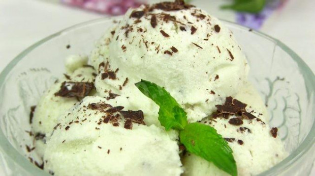

| Название блюда | Оценка | Ссылка на рецепт | Фото |
|---|---|---|---|
| Лазанья | 5.0 | Рецепт классической лазаньи | |
| Курица карри с рисом | 4.8 | Рецепт курицы карри с рисом | |
| Креветки жаренные в чесночном соусе на сковородке | 4.9 | Рецепт креветок жаренных в чесночном соусе на сковороде | |
| Запеченный сибас с овощами и травами | 4.7 | Рецепт запеченного сибаса с овощами и травами | |
| Мятное мороженное с кусочками шоколада | 5.0 | Рецепт мятного мороженого |  |